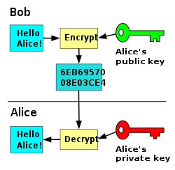
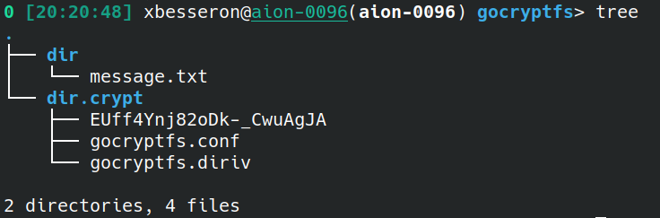
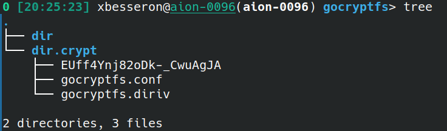

Data Management and Reproducibility
- Authors: Marek Ostaszewski (University of Luxembourg), Xavier Besseron (University of Luxembourg)
- License: ©2024 CC BY-NC-SA 4.0
- Date of practical: Tuesday 30th of April 2024
- Adapted from UL HPC Tutorials: Thanks to Valentin Plugaru, Sarah Peters, the LCSB data stewards and R3 teams for the initial versions!
🔵 Introduction
Welcome to our practical session on Data Management & Reproducibility. When using HPC platforms, mastering these skills is not just beneficial, but essential. You will get to practice basic techniques ensuring the integrity and confidentiality of your data and allowing your results to be accurately reproduced by others. This is not just about making your life easier; it’s about enhancing the credibility and integrity of your work.
Objectives
This session will cover 4 parts:
- Filesystem Quotas: Learn how to check the filesystem usages and quotas on the Uni.lu HPC platform.
- Checksum: See how hashing algorithms can be used to check the integrity of your data.
- Encryption: Practice encryption tools that you can use to protect your confidential data.
- Reproducibility: Get to know typical reproducibility issues and learn how to address them.
The exercises will also refer to external documentation and instructions that need to be consulted. The aim is for you to be independent and work in 'real conditions' by finding the information you need to complete the tasks.
Instructions
This practical is an individual work to be carried out on the Aion cluster of the HPC platform of the University of Luxembourg.
It is composed of different elements:
- this page that contains instructions and questions;
- the GitHub Classroom repository that contains the materials for the exercises;
- the report that you have to submit via GitHub Classroom with the rest of the requested documents
Report
Together with this tutorial, you need to prepare a short report of your work:
- There is no template, you can start from a blank document. Keep it simple, clear and well-organized.
- Make sure you answer all the questions (cf below), with text, code or screenshots as requested.
- Prepare your report at the same time you're doing the exercises.
- Submit your report as a PDF file to your GitHub Classroom repository and push it before the deadline.
Question 0: What? Who? When?
Indicate at the beginning of your report:
- the title of the practical
- your full name
- your Uni.lu HPC username
- your GitHub username
- the date
🔵 Part 0: Setup
GitHub Classroom Repository
Following the same approach as the previous practicals, this practical relies on Git Classroom to distribute the extra materials and for the submission of the report. To create your copy of the repository, follow the invitation link and accept the assignment:
Assignment link: https://classroom.github.com/a/gk3w_4Qr
If you need detailed explanations, please refer to the first week's instructions for Setting up Git and downloading the materials.
Connection to a Compute Node
The exercises are to be carried out in interactive mode on a compute node of the Aion cluster of the University of Luxembourg.
As a reminder, here are the steps to access a compute nodes:
- Connect to the access node of the Aion cluster (cf Connection to HPC Access)
- Find your reservation, if application (cf Finding your reservation)
- Connect to a compute node (cf Connection to a compute node)
Recommended Settings
For this practical session, the following options are suggested:
- Partition:
interactive - QoS:
debug - Reservation:
hpc_software_4d30during the Tuesday afternoon session - Time: 2 hours (or ending before the end of the reservation)
- Node: One compute node
- Tasks: One task
- Cores: 32 cores per task
Your access command line should look like this:
salloc -p interactive --qos debug --reservation=hpc_software_4d30 --time=2:00:00 -N 1 -n 1 -c 32
🔵 Part 1: Storage and Quotas
Filesystem Usage
On Linux, filesystem usage is measured with two metrics:
- Space usage: This refers to the amount of disk space that is being used by the files and directories. It is usually measured in bytes, kilobytes (KB), megabytes (MB), gigabytes (GB), or terabytes (TB). Space usage tells you how much of your total disk capacity is occupied and how much is still available for storing additional data.
- Inodes: This metric refers to the number of inodes being used. An inode is a data structure that stores metadata about a file or directory. Each file or directory consumes one inode. The total number of inodes is fixed when the filesystem is created, and running out of inodes means no new files can be created, even if there is still space left on the disk. Inode usage is typically measured by the count of inodes.
Together, these metrics give a comprehensive view of the filesystem’s health and capacity. While space usage is often what users notice first (as it directly affects how much data they can store), inode usage is equally important for the filesystem’s ability to manage files and directories.
The df command displays a short report of the storage usage:
- By default, df reports the disk space usage of each storage (or mount filesystem).
- With the -h/-H options, df reports the usage using human-readable units.
- Using the -i option, it reports the number of inodes.
Question 1: Difference between the options -h and -H of df
What is the difference between the options the options -h and -H of df?
You can find the answer on the manpage, cf man df or online.
Question 2: Available storage on Uni.lu HPC
What is the total available space and inodes for the users' home directories of the Aion cluster?
Note: Run the command ls -l /home/users to understand on which filesystem are located the users' home directories.
Filesystem Quotas
Because the HPC supercomputers are shared between multiple users, the storage usage is usually limited for each user using quotas.
On the Uni.lu HPC platform, the df-ulhpc command can be used to know your actual usage and your quota limitations.
It shows a list of directories on which quotas are applied, how much space you are currently using, your soft quota, hard quota and the grace period.
Once your usage reaches the soft quota you can still write data until the grace period expires (7 days) or you reach the hard quota.
After you reach the end of the grace period or the hard quota, you have to reduce your usage to below the soft quota to be able to write data again.
df-ulhpc is only available on the access nodes
The command df-ulhpc is only available on the access nodes. Open a new connection to Aion to try it.
Question 3: Quotas on Uni.lu HPC
Answer these questions in your report:
- What is your current usage (space and inodes) for your home directory?
- What are the soft limits for each of them?
- How does it compare to the Uni.lu HPC documentation on Quotas?
- How much represents your current usage as a percentage in comparison to the whole storage of the home filesystem?
Take screenshots of the commands you ran to get the answers and add them to your report 📸.
Note: Run df-ulhpc -h to find out the command line options.
df-ulhpc is only available on the Uni.lu HPC platforms
The df-ulhpc command is a small script that summarizes the quota from different filesystems. This specific command is only available on the Uni.lu HPC platforms. On the MeluXnia supercomputer, you can use the command myquota for a similar result.
In the back, these scripts rely on the quota commands specific to each file system, for example:
- lfs quota for Lustre filesystems;
- mmlsquota for GPFS filesystems.
Directories and File Usage
The tools du and ncdu can show the disk and inode usage of specific files and directories (recursively).
- du (Disk Usage): The
ducommand is a standard Linux/Unix utility that provides information on disk usage. It’s typically used to measure the space taken up by files and directories on a filesystem. Here are some common options you can use with du:-hor--human-readable: Display sizes in a human-readable format (e.g., KB, MB, GB).-sor--summarize: Provide a summary of the total space used by the specified directory, rather than listing individual files.-aor--all: Include all files and directories in the output.- Check for more options on the manpage:
man duor online.
- ncdu (NCurses Disk Usage):
ncduis a disk usage analyzer with a ncurses interface, which provides a text-based graphical user interface to navigate through the files and directories while showing their sizes. It’s an alternative to du with a more interactive experience. Key features include:- An interactive interface to browse directories and their sizes.
- Options to sort files/directories by size and delete them directly from the interface3.
- Ability to export and import scan results, which is useful for analyzing disk usage at different times or on different systems4.
Both tools are very useful for users and sysadmins looking to manage disk space efficiently.
Question 4: Usage of your home directory
Use du to find the current disk and inodes usage of your home directory. Write down the commands and usage in your report.
Does it match the values returned by the df-ulhpc command?
🔵 Part 2: Data Integrity
The integrity of data files is critical for the verifiability of computational and lab-based analyses. The way to seal a data file's content at a point in time is to generate a checksum. A checksum is a small-sized datum generated by running an algorithm, called a cryptographic hash function, on a file. As long as a data file does not change, the calculation of the checksum will always result in the same datum. If you recalculate the checksum and it is different from a past calculation, then you know the file has been altered or corrupted in some way.
Below are typical situations that call for checksum generation:
- A data file has been newly downloaded or received from a collaborator.
- You have copied data files to a new storage location, for instance, you moved data from your local computer to HPC to start an analysis. You want to create a snapshot of your data, for instance when you’re creating a supplementary material folder for a paper/report.
A hash function is a mathematical algorithm that converts an input (e.g. a file content) into a (short) fixed-size string of characters, which is typically a sequence of numbers and letters known as a hash value or digest. Hash functions are used to verify the integrity of data in files by generating a hash value for the original data and then comparing this hash value with a hash generated from the received data. If the two hash values match, it indicates that the data has not been altered; if they do not match, it suggests that the data may have been compromised.
Properties of a good hash function
The properties of a good hash function include:
- Consistency: The same input will always produce the same hash value.
- Uniqueness: Different inputs will produce unique hash values (with a very low probability of collisions).
- Speed: The function generates the hash quickly, regardless of the size of the input.
- Irreversibility: It’s computationally infeasible to reverse the hash value to find the original input.
For more information, check the Wikipedia page.
SHA hash
SHA is short for Secure Hash Algorithm. Several versions of SHA have been developed over time: SHA-1, SHA-2 and SHA-3. SHA-2 is a whole family of algorithms that create hash values of different lengths. The most commonly used version and the one recommended by the National Institute of Standards and Technology (NIST) is SHA-256, which creates a hash value of 256 bits.
Let's start with a short example:
# Create a new file
echo 'Happy secure computing!' > message.txt
# Compute the SHA-256 checksum of the file
sha256sum message.txt
If you created the exact same file, the output should be
40d61ef3ba32cc17f2c90db65e6c4d884d220b1999cbded7e80988541c9db11b message.txt
The checksum can be stored in a file to be re-used later to verify the integrity of the file.
# Save the checksum
sha256sum message.txt > message.sha256
# Verify the file against the checksum
sha256sum -c message.sha256
If the file has not been modified, the output should be
message.txt: OK
Let's modify the file and see what happens to the checksum:
echo "This file has been changed." >> message.txt
sha256sum message.txt
sha256sum -c message.sha256
Question 5: Checksum verification of message.txt
What is the new checksum for the message.txt file?
What is the output of the sha256sum -c command?
Just take a screenshot of the output and add it to your report 📸.
MD5 hash
The MD5 message-digest algorithm is a widely used hash function producing a 128-bit hash value. Although MD5 was initially designed to be used as a cryptographic hash function, it has been found to suffer from extensive vulnerabilities. It can still be used as a checksum to verify data integrity, but only against unintentional corruption.
(...) it should not be relied on if there is a chance that files have been purposefully and maliciously tampered. In the latter case, the use of a newer hashing tool such as sha256sum is recommended.
We can create the MD5 checksum with the following command:
md5sum message.txt > message.md5
We can verify the file against the checksum similar to the above:
md5sum -c message.md5
message.txt: OK
Question 6: SHA-256 vs MD5?
Between the two hashing tools sha256sum and md5sum, which one should you prefer to use? Why?
Question 7: Checksum verification and update
-
Go to the
data_integritydirectory of your GitHub Classroom repository and verify the SHA-256 and MD5 checksums. Which files have been modified since the creation of the checksums? -
Re-generate the checksums for the three files
hello.cpp,hello_mpi.cppandREADME.mdand update the checksum files. Commit and push the modified checksum files.
🔵 Part 3: Data Encryption
File encryption is a security process that involves converting sensitive information into encoded data to prevent unauthorized access. It’s a e effective measure to protect sensitive data that ensures only those with the correct key or password can access the content of the files.
How file encryption works:
- Encoding: The original file is encoded using an algorithm, transforming readable data into an unreadable format.
- Keys: This process generates a key, which could be a password or a set of characters, that will be used to decrypt the file.
- Decryption: The recipient, who has the key, can then decrypt the file to revert it to its original, readable state.
Important Notice
- Encryption keys and passphrases need to be kept safe and protected from unauthorised access.
- Losing your encryption key means losing your data.
- Ensure you have an off-site backup of critical data stored on the platform under encryption.
- (Disaster) recovery of encrypted data is not guaranteed to be viable, depending on internal consistency when the recovery snapshot is taken.
In this part, you will practice with two encryption tools: GPG and Gocryptfs.
GPG
GPG, short for GNU Privacy Guard, is a free encryption software that implements the OpenPGP standard. It allows users to encrypt and sign their data and communications, providing a secure method of transferring sensitive information over the internet. It is widely used for secure communication (e.g. emails), data storage, and ensuring the authenticity of transmitted information.
Encryption with a passphrase
We can encrypt our test file using GPG with the following command:
# Encrypt the file
gpg -c message.txt
# Delete the original file
rm message.txt
Since you did not specify with what to encrypt your file, GPG will ask for a passphrase. Enter twice the same passphrase and make sure you remember it (in this case at least until the next step). This will create the encrypted file message.txt.gpg next to the unencrypted file, so let us delete the unencrypted file:
You can decrypt the file with the following command:
gpg -o message.txt -d message.txt.gpg
Did you notice? GPG did not ask you for the passphrase to decrypt the file. Indeed, this is because GPG cached the passphrase in memory for the current SSH session. If you disconnect and connect again, GPG will require the passphrase to decrypt the file.
Alternatively, you can kill the GPG agent that keeps the passphrase in memory and try to decrypt the file again:
# Kill the GPG agent
killall gpg-agent
# Decrypt the file
gpg -o message.txt -d message.txt.gpg
Can you see the content of the file after decryption?
Question 8: Decrypt the secret message
Go to the directory gpg_encryption_with_passphrase and decrypt the file secret_message.txt.gpg. The passphrase is HPC.
What is the content of the secret message?
Using GPG keys
A short introduction to public key cryptography
Public key cryptography, also known as asymmetric cryptography, is a cryptographic system that uses pairs of keys: public keys, which may be disseminated widely, and private keys, which are known only to the owner. This system enables secure data transmission and digital signatures, which are essential for online security and privacy.

Key components of public key cryptography:
- Public Key: Used to encrypt data or verify a signature. It’s safe to share with everyone.
- Private Key: Used to decrypt data or create a signature. It must be kept secret.
How it works:
- Encryption: A sender encrypts the message with the recipient’s public key.
- Decryption: The recipient decrypts the message with their private key.
In an asymmetric key encryption scheme, anyone can encrypt messages using a public key, but only the holder of the paired private key can decrypt such a message. The security of the system depends on the secrecy of the private key, which must not become known to any other.
Instead of using a passphrase, you can also encrypt files using an encryption key. The advantage of using encryption keys is that you never have to share a secret (e.g. the passphrase or the private).
For this part, you will have to send a file to your teacher after encrypting it with his key. As explained above, you will need your own private key and the public of your teacher.
-
Create an encryption key with GPG using the following command:
gpg --gen-key -
Go to the
gpg_encryption_with_keydirectory, and import the public key of the teachergpg --import xavier-besseron.key -
List your available keys
You should see at least two public keys (one for you and one for your teacher) and one private key (for you).# List public keys gpg --list-keys # List private keys gpg --list-secret-keys -
Create a file with a message to your teacher (by creative 😀)
echo "${USER} finds that HPC is great|boring|complicated|...!" > my_message.txt -
Encrypt the file for your teacher.
gpg --encrypt --sign --recipient xavier.besseron@uni.lu my_message.txt
Question 9: Send an encrypted message to your teacher
After following the instructions above add the encrypted file my_message.txt.gpg containing your message to the gpg_encryption_with_key directory of your GitHub Classroom repository.
Your teacher will decrypt the file with the command. Because it was encrypted with his public key, only he can decrypt using his private key.
gpg --decrypt my_message.txt.gpg
If you are going to transfer confidential data to someone else, you can share your public key of the recipient. For that, you can export your public key in a file (as done for you by your teacher) or upload your public key to a public keyserver. But remember: never share, upload or transfer private keys!
# Export your public key to a file
gpg --output firstname-lastname.key --armor --export email@uni.lu
# Upload your public key to a server
# - KEY_ID from gpg --list-keys output
# - Choose your keyserver, for example, openpgp.circl.lu
gpg --keyserver keyserver.example.com --send-keys KEY_ID
Gocryptfs
Gocryptfs is a modern implementation of an encryption overlay filesystem. For more details on its inner workings, see the following:
- Security design documentation
- Threat model
- 2017 security audit, Audit report as PDF
- Gocryptfs source code
To use gocryptfs on the HPC platform you need to do the following steps:
1. Load the gocryptfs module
module load tools/gocryptfs
2. Create two folders:
dir.crypt, which will act as the storage for the encrypted files (let’s call it crypt)dir, which will present (on demand) the unencrypted view (let’s call it view)
mkdir dir.crypt dir
gocryptfs does work on the Lustre filesystem
Currently gocryptfs does not work well on the Lustre filesystem ($SCRATCH).
You need to specify the additional option -noprealloc to use it on Lustre.
It works well on SpectrumScale/GPFS ($HOME and project directories), though.
3. Initialize the crypt folder with a password
Command:
gocryptfs -init dir.crypt
Terminal output:
Choose a password for protecting your files.
Password:
Repeat:
Your master key is:
e1ecdcf1-6bcebaa0-cbe6cfb8-8e27d4ad-
acefb9d4-bd98de59-311d1898-31d7e4e4
If the gocryptfs.conf file becomes corrupted or you ever forget your password, there is only one hope for recovery: The master key. Print it to a piece of paper and store it in a drawer. This message is only printed once.
The gocryptfs filesystem has been created successfully.
You can now mount it using: gocryptfs dir.crypt MOUNTPOINT
On crypt store initialization, gocryptfs provides us with the master key that can be used to restore access to the data files, especially useful in case the password is lost. You should keep the master key safe, never store it unencrypted on the platform itself!
After initialization, the crypt store contains two internal configuration files:
gocryptfs.confis the global configuration for the crypt store, whilegocryptfs.dirivis created per-directory for encryption of file names
Note that you should never modify (any) files within the crypt store.
4. Mount the crypt folder into the view folder
To be able to access/store data, the crypt store needs to be mounted in the view folder
- this can be done by supplying the initially set password when requested
- or from a file with
-passfileoption (it means that you have stored your password unencrypted on the filesystem - this is then a security risk!) - or with the generated master key, with the
-masterkeyoption (then you should be in a full-node or exclusive job reservation such that there are no other users able to see the master key in the system)
gocryptfs dir.crypt dir
Terminal output:
Password:
Decrypting master key
Filesystem mounted and ready.
(node)$> ls dir
5. Add files to the view folder
All your processing (new file/folder creation, modification and transfers) will happen in the view folder.
Once the crypt store is mounted in the view directory we can create files in the latter:
- any folder/file created in the unencrypted view will have a one-to-one correspondence in the crypt store
- the plain text
message.txtfile is stored in an encrypted format (e.g.,EUff4Ynj82oDk-_CwuAgJA) in the underlying crypt store (file name metadata is encrypted as well) - the same permissions applied on
message.txtare also set for its encrypted correspondent file
echo "Happy secure computing" > dir/message.txt
We can see the clear files in dir and their encrypted versions in dir.crypt:

6. Unmount the view folder
At the end of our processing, we are using fusermount explicitly to unmount the encrypted overlay, such that the unencrypted view of your data is closed and data is flushed to the regular filesystem. Note that you should always ensure that this happens before your job reservation expires.
fusermount -u dir
After unmounting, only the encrypted files are visible:

Other important details
-
Data stored in a crypt store should not be used concurrently (e.g. by multiple users at the same time). The special option
-sharedstorageexists for this use-case, but is not guaranteed to work for all applications. -
(Parallel) Applications ran through
srunon the Iris cluster cannot "see" the unencrypted view folder as they are run in a different context. This is also the case if you usesjoinorsrun --jobidto attach your terminal to a running job. -
The
-initcommand has an option-plaintextnamesto preserve file names.
Question 10: Opening a gocryptfs directory
For this question, you have to use an existing gocryptfs filesystem (no need to initialize it).
- Go to the
gocryptfsdirectory of your GitHub Classroom repository - Use
gocryptfsto mount the encrypted filesystem from thedir.cryptdirectory to thedirdirectory (createdirif necessary). The password to open this filesystem isHPC. - Open the decrypted file
the_answer.txt
Answer in your report:
- What is the content of the file
the_answer.txt? - What is the filename of the encrypted file corresponding to
the_answer.txt?
🔵 Part 4: Reproducibility
This part demonstrates potential issues with reproducibility based on short snippets of code in R and shell.
They are located in the reproducibility directory of your GitHub Classroom repository.
To run the R scripts provided, you will have to load the module of R and then use the Rscript command:
# Load the R module (only once)
module load lang/R/4.0.5-foss-2020b
# Run an R script
Rscript --vanilla scriptname [options]
R scripts 1 and 3 accept user input. Run them with --help to get the list of parameters.
R libraries required
R scripts 1 and 3 require optparse, ggplot2 and magrittr libraries. If they are not installed on your instance, install them manually or uncomment the code in the R script responsible for package installation. This may make the scripts run a bit slower.
(P)RNG seed initialisation
In many cases, you will need to sample a set of random numbers from a given distribution. In most cases, you will use a pseudo-random number generator (PRNG). Read about the properties of PRNGs, and what is the role of a seed.
Run the 1_reproducibility_in.R script from the command line and examine its outputs. The script generates 100 numbers from the normal distribution, plots them and calculates sample quantiles. Run the script multiple times.
- Note that the randomly generated sample changes between runs.
- Set the seed parameter.
Question 11: (P)RNG seed initialisation
Answer these questions in your report:
- What changes when you set the seed? Why?
- Why is it important for reproducibility?
Locale
What is a locale?
In UNIX systems, a locale is a set of environmental variables that defines the language, country, and character encoding settings (or specifically the LC_* environment variables) for your applications and shell session on a per-user basis.
It affects many standard library functions of the operating system and influences the way your programs behave on your system, especially in terms of language, currency, time and date formats, and character encoding. For example, the locale settings include aspects such as:
- LC_NUMERIC: It sets the conventions used for number formatting.
- LC_CTYPE: It determines the interpretation of characters and the behavior of character classes within regular expressions.
- LC_TIME: It specifies the format of date and time.
- LC_COLLATE: This defines how string comparison is performed.
- LC_MONETARY: It determines the style for formatting monetary values.
- LC_MESSAGES: It influences the language in which messages are displayed.
- LC_ALL: This variable determines the values for all locale categories. It has the highest priority and can override other settings.
The locale settings may affect the way datasets are stored and processed, and thus affect the behavior of your applications and system.
More information on [The Open Group Base Specifications](https://pubs.opengroup.org/onlinepubs/9699919799/basedefs/V1_chap07.html] and on Wikipedia.
Run the 2_locale.sh script, examine its contents and outputs. Note different print behaviours depending on US or ES locales, and different fraction separators.
Question 12: Difference of behavior between US and ES locales
Compare and explain the script behaviour on HPC and your local machine. Are they similar?
Run the 2_reproducibility_in.R script from the command line and examine its outputs. The script reads the ./data/calificationes.tsv table and attempts to calculate the mean of the scores the students got.
Question 13: Difference of behavior between US and ES locales
- Why is the script failing to calculate the mean? (a hint in the code)
- What would be your approach to harmonise data processing in an international project?
Precision errors
Especially in simulations, floating point operations can cause reproducibility issues. This blog post is a nice introduction to the topic.
Run the R script 3_reproducibility_in.R and examine its outputs.
- Focus on the first part: See that seemingly identical numbers are actually different.
- Focus on the second part: Examine the difference between two executions of the same function, and how the calculation error evolves with the number of iterations. You can have a look at the generated plot
Rplot.pdfto help you.
Print precision in R
R allows to print up to 22 significant digits, anything above gets automatically rounded.
Question 14: Precision errors
- In which situations are such errors negligible?
- How would you ensure the reproducibility of a complex simulation, involving multiple floating point operations?
- How would you identify potential errors?
🔵 Report submission
Don't forget to add and push all the required files to your GitHub Classroom repository:
- the requested files;
- the report, including the answers to all the questions and the screenshots.
Don't add any other files and directories (for example, build directories, executables, Makefile, etc.).
Finalize your report and save it as a PDF (no other format allowed!) in the report sub-directory of your GitHub Classroom repository.
Uploading your report
You don't need to copy it to the HPC to upload your report. Instead, you can use the Add file button directly on the GitHub webpage.
Files Submission
Your files and report are considered submitted once they are pushed to your repository.
Check your GitHub repository online to make sure: https://github.com/MHPC-HPCSoftwareEnvironment/w10-data-management-and-reproducibility-XXX
Passed the deadline at 06/05/2024 23h59 you won't be able to push anymore.
🔵 Additional Resources
Hashing Algorithms and Checksums
- Wikipedia - Hash function
- Wikipedia - MD5
- Wikipedia - Md5sum
- Wikipedia - SHA-2
- LCSB How-to Card on Checksums